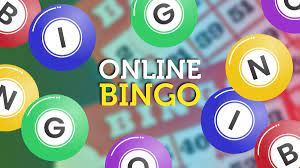

Number games
Sudoku

Sudoku is a captivating number puzzle game enjoyed by people of all ages.
It features a 9x9 grid where players must strategically fill in numbers from 1 to 9, ensuring that no digit repeats within each row, column, or 3x3 subgrid.
This deceptively simple-looking game offers a mental workout, promoting logical thinking and problem-solving skills.
It's a great way to unwind, relieve stress, and keep the mind sharp, making it a beloved pastime for individuals seeking both relaxation and mental stimulation.
Bingo

Bingo is a classic game of chance and excitement that has been a favorite among people of all ages, including seniors, for generations.
Players mark off numbers on their cards as they are called out, with the goal of achieving a specific pattern to win.
It's a social and entertaining activity that brings people together, whether at community centers, retirement homes, or family gatherings.
Bingo provides an element of anticipation and camaraderie, making it a beloved pastime for elderly individuals to enjoy and stay engaged with friends and peers.
2048

2048 is a highly addictive and engaging number puzzle game that has gained widespread popularity.
Played on a 4x4 grid, the objective is to combine identical numbered tiles by swiping them in four directions (up, down, left, or right) to create tiles with larger values.
The ultimate goal is to reach the tile with the value of 2048, but the game can continue beyond that point.
With its simple yet challenging gameplay, 2048 offers players, an excellent way to exercise their minds, enhance their problem-solving skills, and enjoy a rewarding puzzle-solving experience.
Its accessibility and ability to provide hours of entertainment make it a widely cherished and captivating game.
Word games
Crosswords

Crossword puzzles are engaging word games that challenge players to fill a grid of blank squares using clues to find the correct words both horizontally and vertically.
These puzzles offer mental stimulation, vocabulary enrichment, and relaxation, making them a popular pastime for people of all ages, including seniors.
Crosswords can be enjoyed individually or as a social activity, providing hours of entertainment and cognitive exercise.
Wordle
Wordle is a popular word puzzle game that challenges players to guess a secret five-letter word within six attempts.
The game provides feedback after each guess, indicating which letters are in the target word and whether they are in the correct position (marked in green) or if they are part of the word but in the wrong position (marked in yellow).
Players must use deductive reasoning, process of elimination, and word knowledge to crack the code before running out of guesses.
Wordle is known for its simplicity and addictive nature, making it a fun and engaging wordplay experience for people of all ages.
Scrabble
Scrabble, the enduring word game, is a captivating pastime that challenges players to strategically arrange letter tiles on a game board to form words while aiming for the highest possible scores.
This classic game is a cherished choice for individuals of all ages, including the elderly, offering not only a mental workout that bolsters vocabulary and cognitive skills but also a means of social interaction, whether played with family or friends.
Scrabble's enduring popularity lies in its ability to simultaneously stimulate the mind and create enjoyable opportunities for meaningful connections, making it a timeless and cherished activity.
Word Search

A word search is an engaging and enjoyable word puzzle that consists of a grid of letters, in which words are hidden horizontally, vertically, or diagonally.
The objective is to locate and circle these hidden words based on a provided list of clues or themes.
Word searches are a popular pastime for people of all ages, including the elderly, due to their simplicity and entertainment value.
They provide a relaxing and satisfying way to challenge one's observational and pattern-recognition skills, all while exploring various themes and vocabulary.
Whether done in solitude or as a shared activity, word searches offer a delightful and mentally stimulating experience.